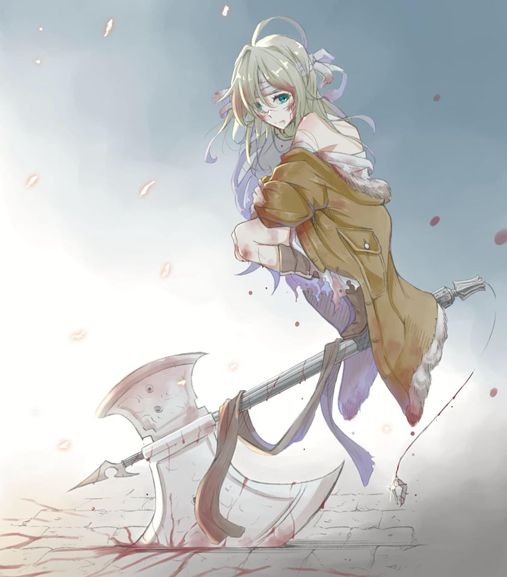
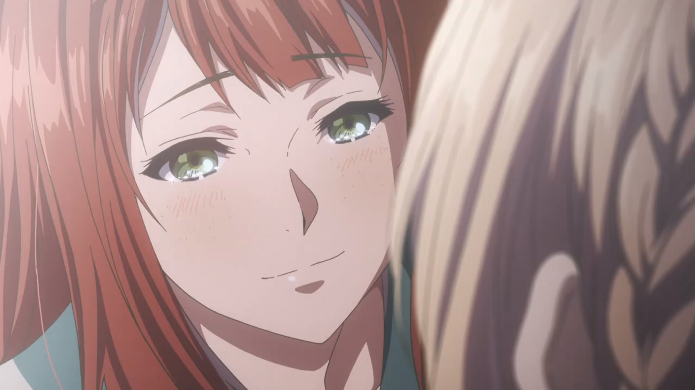
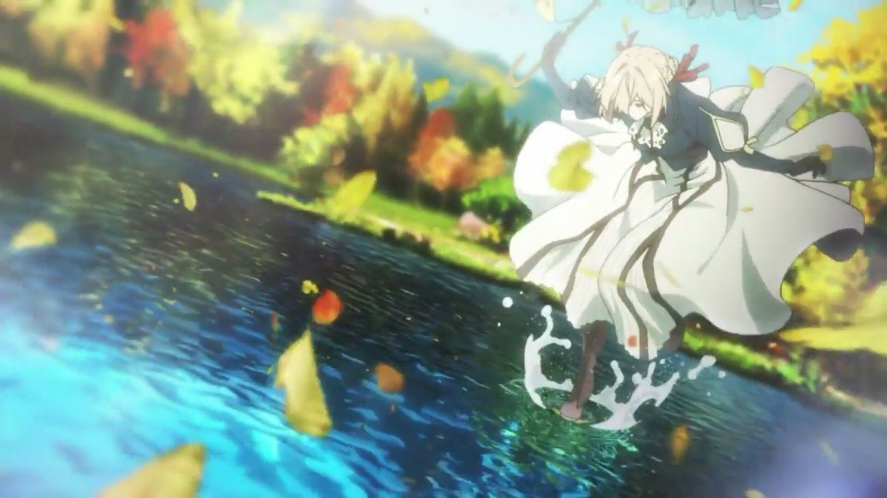
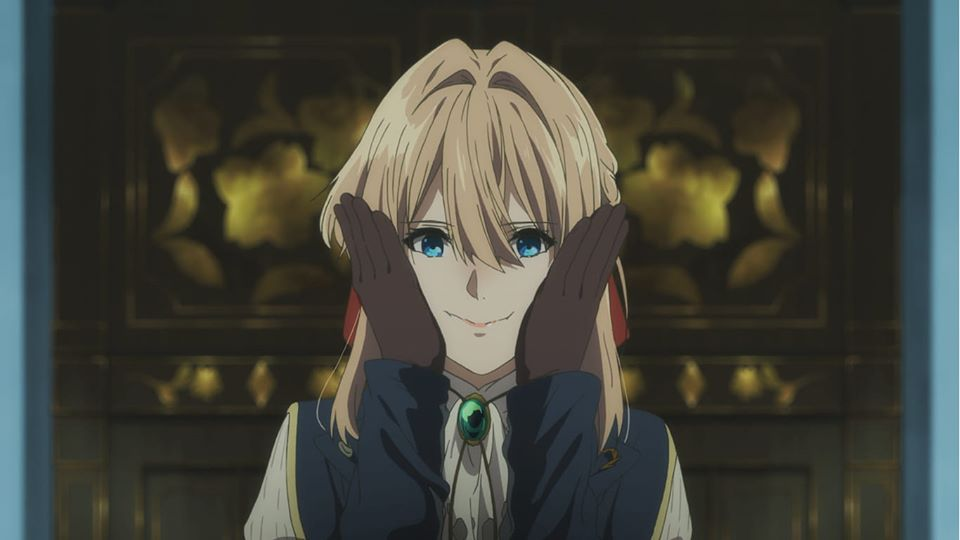
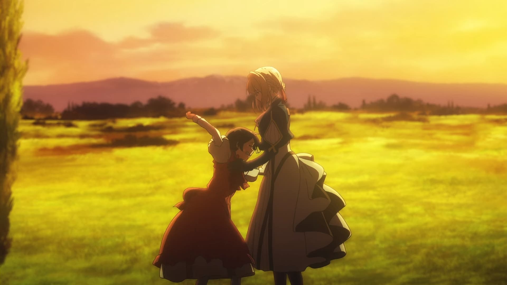
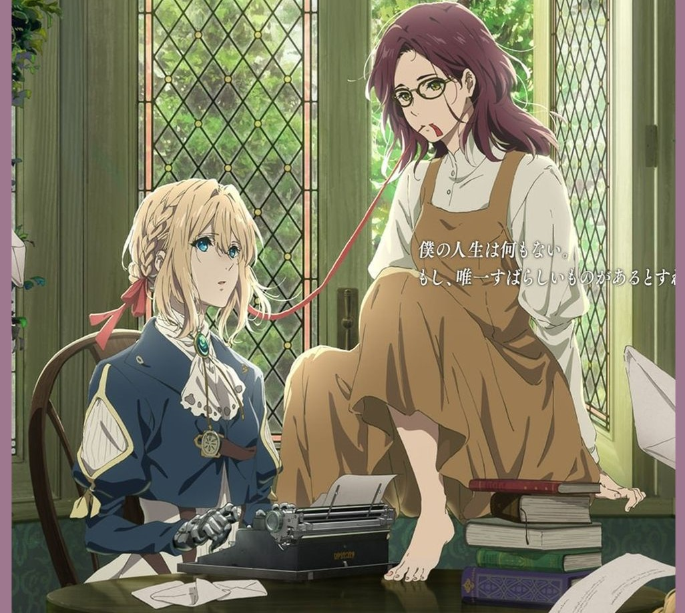
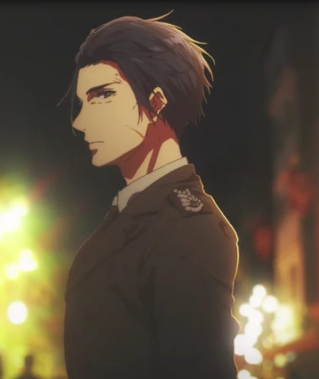

Violet Evergarden-the girl in my dream :V uwu
The girl who makes me cries =((
 This is a new poster about her brand new movie which is going to be live on 24-4-2020
This is a new poster about her brand new movie which is going to be live on 24-4-2020
U think her is beautiful :V Right ??? let's see more picture about her

A small beaty angel of death slightly split u into two =)) when her still in the army
 when she wake up after a long time after the final battle
when she wake up after a long time after the final battle

Luculia - Her first friend as a Auto Memories Doll and mlem mlem :D
 Viên đá này đẹp như đôi mắt của thiếu tá vậy. Do em không biết nói nhưng đôi mắt của thiếu tá đã đẹp ngay từ lần đầu ta gặp nhau :vv
Viên đá này đẹp như đôi mắt của thiếu tá vậy. Do em không biết nói nhưng đôi mắt của thiếu tá đã đẹp ngay từ lần đầu ta gặp nhau :vv

Có thể chưa sang được bờ bên kia nhưng tôi chắc tôi đã đi được ba bước đó

when she try to smile :vv so cuteee uwuw

The episode which make every man cry =((

Her OVA movie gaiden SO awesomeeeee :D

And finally :V Cho-san so handsomeeee :D dành cho các bạn nữ nè KEKW :v
 The ending we all waiting for <333
The ending we all waiting for <333
And with a brift cute voice she said :
"Chỉ cần quý khách mong muốn, tôi sẽ đến bên người dù bất cứ mọi nơi, tôi là một Auto Memories Doll, Violet Evergarden"
If you have time, you should read more about light novel
and watch her anime especially episode 10 which had made lots of people cry =((